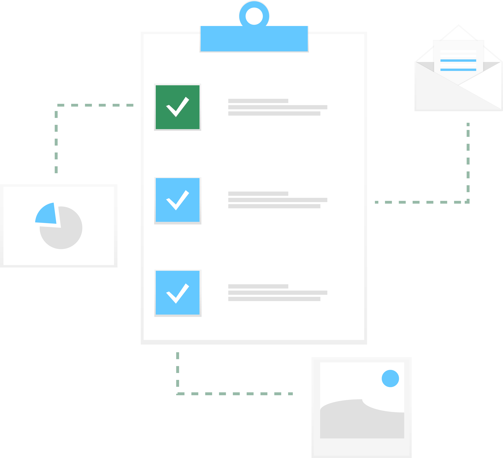
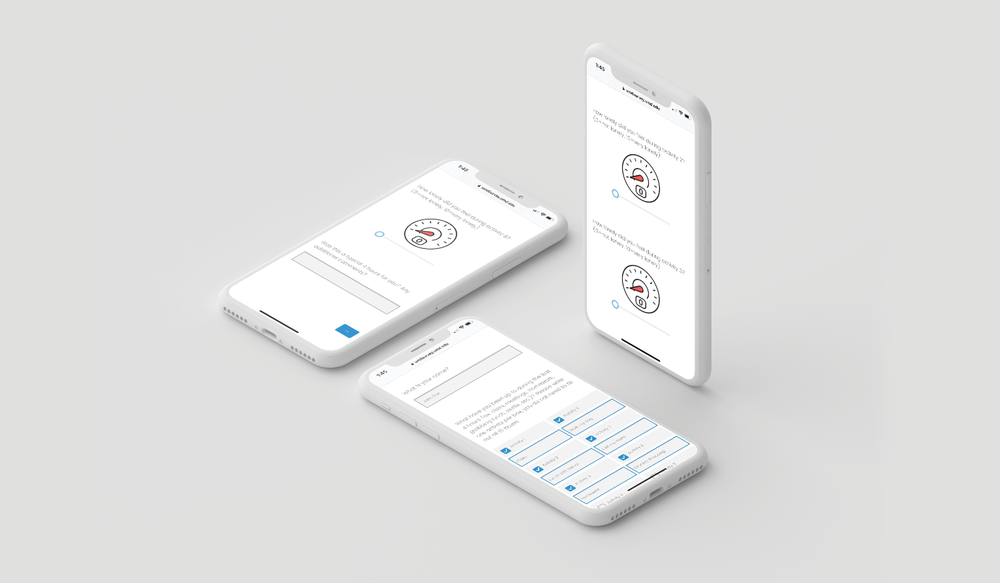
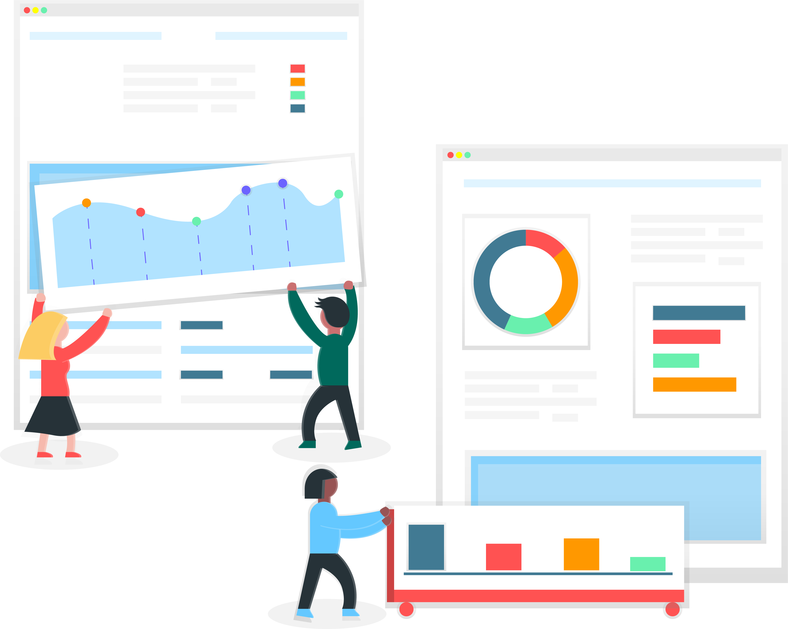

Motion Design Studio course at the University of Maryland
Process
User Analysis
Storyboarding
Building
Critique
Final Presentation

User Research
Research Plan
Background Research
Participant Screener
Time Diary Study
De-brief Interviews
Background Research
Before we started building our research plan we thought it necessary to see what other studies have been done in this field, and what we might be able to learn from them. We learned a lot from this paper and were able to base our survey questions off the data they had found.
Participant Screener
Based off the data we found in our research, we decided we should conduct an initial survey to all of our participants. The survey has some general demographic questions but mainly was structured around these four questions:
How often do you feel like you have no one to talk to?
How often do you feel left out?
How often do you feel isolated?
How often do you feel lonely?
Time Diary
The main portion of our research was the time diary study. Using qualtrics, we built a system that reached out to our participants three times a day (morning, afternoon, & night), over the course of a week. They were given the opportunity to fill in the activities had been up to and their corresponding levels of loneliness.
There was an optional space at the bottom of each survey that asked participants if this was a typical day for them, and gave them a space to write freely.

De-brief Interviews
The time diary study helped us identify key times and activities where each participant felt the most lonely. In our debrief interviews we used that personalized data to ask the participants contextual and emotional questions, but primarily we tried to ask them questions about how they coped with their loneliness during those times and activities.

Data Interpretation
We are currently busy sorting, studying, and learning about the data collected from our research.